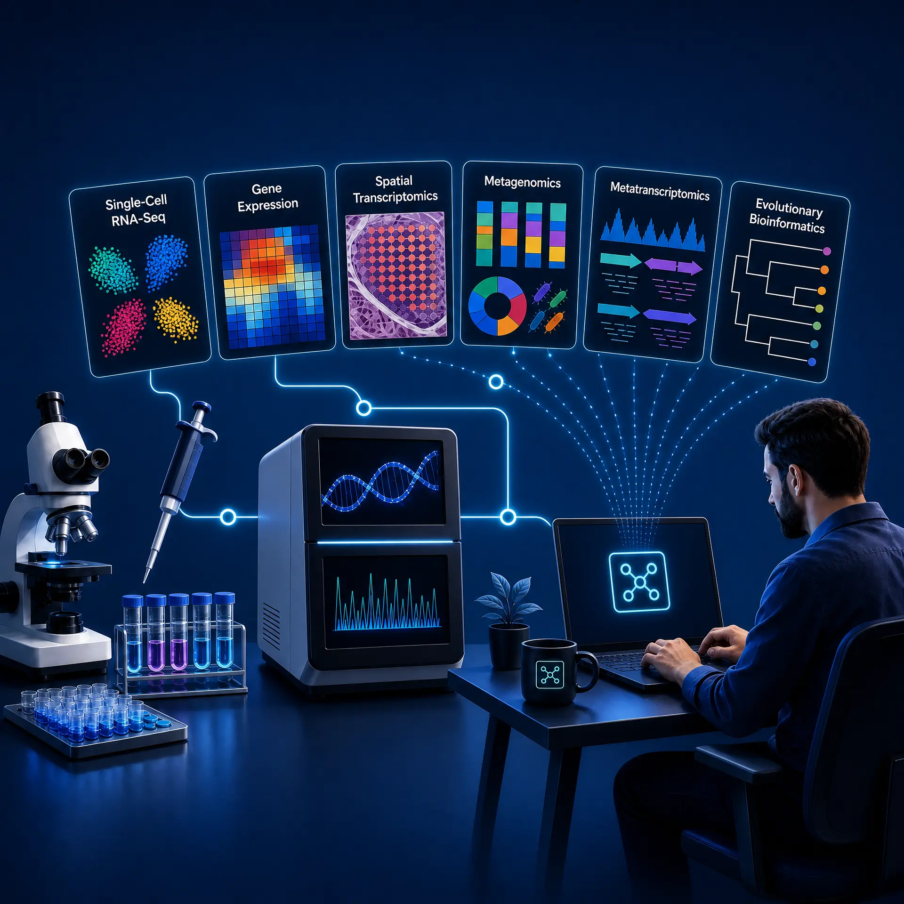

The Omics Hub: Bioinformatics & Computational Biology, Step by Step
Learn to work with biological data, from files and code to genomics and single-cell analysis. Start with the foundations, or choose a lesson for your research question.
Explore Tutorials →
A clear starting point for biological data
Understand the question. Then choose the method.
Choose a lesson that fits your question and starting skills. Hands-on labs provide focused exercises; conceptual guides explain decisions; advanced templates need your inputs and adaptation; references help with formats, commands, and troubleshooting.
01 | Understand
Build the foundations
Learn files, data formats, R or Python, quality control, and statistics before moving into a specialist analysis.
02 | Practice
Practice with a clear goal
Check the lesson’s setup and inputs. Run the exercise or adapt the template, then inspect the outputs before using research data.
03 | Interpret
Read results critically
Ask what the result supports, which assumptions matter, and what remains uncertain before drawing a biological conclusion.
New to bioinformatics? Start Here helps you choose your first lesson.
Choose your first lesson →Find a topic that fits your question
Build core skills in Linux, HPC, R or Python, then explore single-cell RNA-seq (scRNA-seq), metagenomics, spatial analysis, and AI-assisted research. Check each lesson’s inputs, setup, and limits before you begin.
Choose your route
Explore the library
Browse 58 lessons across foundations, computing, single-cell analysis, and omics. Check the format and prerequisites: some exercises provide synthetic or public data, while templates need inputs you prepare yourself.
Foundations
Data formats, quality control, statistics, R, Python, Git, and experimental design for bioinformatics.
12 tutorialsLinux, HPC and Workflows
Shell scripting, Slurm job scheduling, Conda environments, Snakemake pipelines, and containerization.
10 tutorialsSingle-Cell and Spatial
Count matrices, quality control, clustering, annotation, trajectories, multi-modal integration, and spatial transcriptomics.
15 tutorialsOmics and AI
Metagenomics, microbial RNA, evolutionary genomics, exome analysis, and the design and limits of AI-assisted research.
21 tutorialsFeatured lessons
These lessons have different starting points. Check the format, setup, and prerequisites before choosing one.

Computer and Data Fundamentals for Biologists
Hands-on lab: Build a bioinformatics project layout, inspect compressed FASTQ files, and practice checksum and file-integrity checks.
Read tutorial →
Micromamba Environments for Bioinformatics
Hands-on lab: Install Micromamba, create isolated environments, and practice recording and checking bioinformatics dependencies.
Read tutorial →
Connecting to HPC
Conceptual guide: Review institutional HPC access, SSH keys, file transfer, and common connection problems. Local access policies and cluster details must be supplied by your institution.
Read tutorial →
scRNA-seq Basics
Hands-on lab: Start with a public PBMC 3k count matrix and work through QC, normalization, clustering, and UMAP using Seurat or Scanpy.
Read tutorial →
Kraken2 and Bracken: Shotgun Metagenomics
Advanced template: Adapt Kraken2 and Bracken examples to prepared paired reads and a compatible database, then inspect classification and abundance outputs.
Read tutorial →
Designing Auditable AI Workflows
Conceptual guide: Explore AI-assisted workflow design: input contracts, evidence provenance, bounded retries, human-review gates, and failure handling.
Read tutorial →Learn with context, not just commands
Use the explanations, setup notes, and references to understand why a method fits your question and what you need to check yourself.
Understand the data before choosing a cutoff.
Use diagnostic plots and biological context to justify your choices, rather than applying the same threshold to every dataset.
Learning Example: PBMC 3k QC and Clustering
The scRNA-seq Basics lab starts with a public PBMC 3k count matrix and presents Seurat and Scanpy examples for QC, normalization, clustering, and UMAP. It explains why gene-count and mitochondrial metrics need biological context. This is a focused matrix-to-clustering exercise, not a raw-read processing pipeline or a clinical validation workflow.
Explore the PBMC QC-to-clustering lab →Check examples in your environment
Where provided, use setup notes, expected outputs, and diagnostic checks to assess an example. Not every biological workflow has been run end to end; verify the relevant steps in your environment before applying them to research data.
A suggested study order
The Start Here page links the foundations to specialist topics. Use the suggested order as guidance and check each lesson’s prerequisites.
Built for Biologists
Written for biologists learning computational methods. Begin with the foundations if command-line tools or coding are new to you.
Meet the Author: Nasir Mahmood Abbasi, PhD
Computational Biologist & Data Scientist
Welcome to The Omics Hub. I hold a PhD in Cancer Biology and specialise in single-cell multi-omics, cancer genomics, and reproducible computational workflows. I built this platform to help researchers move from biological questions to practical, command-line analysis.
The lessons focus on practical research decisions, from single-cell integration to workflows on a cluster. The aim is to explain the analysis so you can adapt examples responsibly.
About the author →Choose your next lesson
Browse all 58 lessons by topic, suggested experience, and learning format. New to the field? Begin with Start Here.
Browse the Full Catalogue